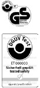 |
Prüfzeichen, z. B. GS und DGUV Test |
| EG-Konformitätszeichen (CE-Kennzeichnung) |
|
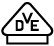 |
Prüfzeichen des VDE Prüf- und Zertifizierungsinstitutes |
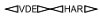 |
VDE-Harmonisierungskennzeichen für Kabel und Leitungen |
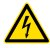 |
Gefährliche elektrische Spannung |
| Doppelte oder verstärkte Isolierung (Schutzklasse II) | |
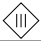 |
Schutzkleinspannung (Schutzklasse III) |
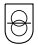 |
Sicherheitstransformator |
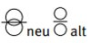 |
Trenntransformator |
| Leuchten für rauen Betrieb | |
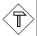 |
Steckvorrichtung für erschwerte Bedingungen |
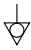 |
Potentialausgleich |
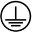 |
Schutzerdung, z. B. zur Kennzeichnung der Schutzleiteranschlussstelle |
| Explositionsschutzkennzeichnung (ATEX-Richtlinie) | |
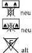 |
Nicht zur direkten Befestigung auf normalentflammbaren Oberflächen geeignete Leuchten (nur zur Befestigung auf nicht brennbaren Oberflächen geeignet) |
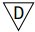 |
Leuchte mit begrenzter Oberflächentemperatur nach VDE 0711-2-24 |
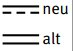 |
Gleichspannungsversorgung |
| Wechselspannungsversorgung | |
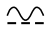 |
Wechselspannungs- und Gleichspannungsversorgung |
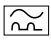 |
RCD vom Typ A zum Schutz bei Wechsel- und Pulsfehlerströmen der Netzfrequenz |
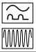 |
RCD vom Typ F zum Schutz bei Wechsel- und Pulsfehlerströmen der Netzfrequenz und bei Fehlerströmen mit Mischfrequenzen abweichend von der Netzfrequenz |
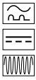 |
RCD vom Typ B zum Schutz bei Wechsel- und Pulsfehlerströmen der Netzfrequenz sowie glatten Gleich- und Wechselfehlerströmen bis mindestens 1 kHz |
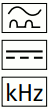 |
RCD vom Typ B+ für den gehobenen vorbeugenden Brandschutz zum Schutz bei Wechsel- und Pulsfehlerströmen der Netzfrequenz sowie glatten Gleich- und Wechselfehlerströmen bis 20 kHz |
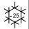 |
RCD zum Einsatz bei tiefen Temperaturen |